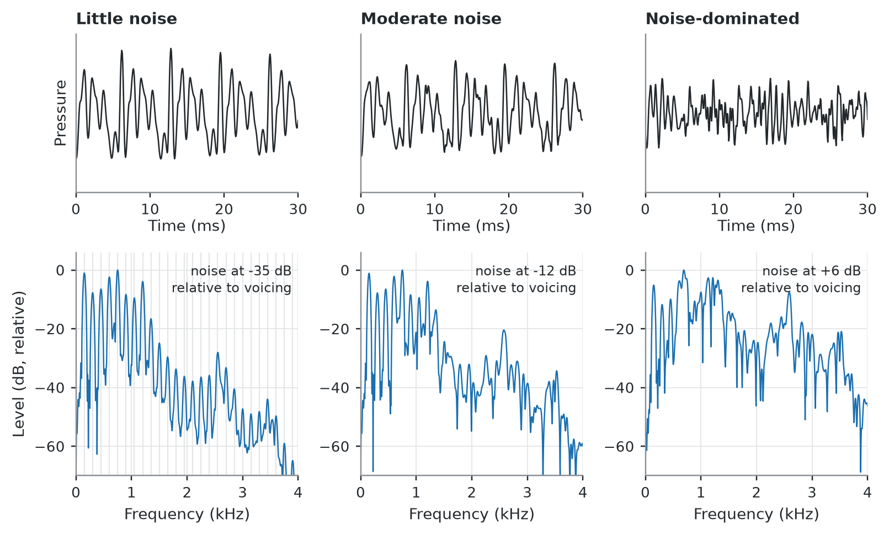

Living draft. This chapter reflects the sources cited below and will be revised as further sources are incorporated. Found an error? Use the Report an issue link in the sidebar.
7.1 Definition
The question the harmonic-to-noise ratio asks is how much of the sound is periodic at all. Unlike jitter and shimmer it does not compare one cycle with the next: it weighs the energy that repeats against the energy that does not.
A characteristic feature of hoarseness is the replacement of harmonics by noise energy: aperiodic sound intensifies at the expense of the periodic signal. It is therefore reasonable to conclude that the best index of hoarseness might be the ratio of one to the other, and that is what the harmonic-to-noise ratio measures (Baken and Orlikoff 2000).
The conceptual basis is simple. The voice is considered to have two components, perfectly periodic waves and random noise. The H/N ratio is the mean amplitude of the wave divided by the mean amplitude of the isolated noise components for the train of waves, and for convenience it is expressed in decibels (Baken and Orlikoff 2000).
Figure 7.1 shows the harmonics being replaced by noise as the ratio falls.
Show the code for this figure
fs, f0 =16000, 150.0T0 =1.0/ f0ncyc =90rng = np.random.default_rng(5)per = T0 * (1+0.002* rng.standard_normal(ncyc))amp =1+0.02* rng.standard_normal(ncyc)levels = [("Little noise", -35), ("Moderate noise", -12), ("Noise-dominated", 6)]def log_spectrum(x, fs, win_s=0.040, nfft=4096): L =int(win_s * fs) seg = x[len(x) //2- L //2: len(x) //2+ L //2] * np.hanning(L) S = np.abs(np.fft.rfft(seg, nfft)) f = np.fft.rfftfreq(nfft, 1/ fs)return f, 20* np.log10(S +1e-12)fig, axes = plt.subplots(2, 3, figsize=(7.4, 4.5), gridspec_kw={"height_ratios": [0.85, 1.2]})show_s =0.030for j, (name, nd) inenumerate(levels): x = vs.synth_vowel(per, amp, fs, noise_rel_db=nd, seed=21) t = np.arange(len(x)) / fs ax = axes[0, j] m = t <= show_s ax.plot(t[m] *1e3, x[m], color=vs.INK, lw=0.85) ax.set_title(name, color=vs.INK) ax.set_ylim(-1.2, 1.2); ax.set_yticks([]); ax.set_xlim(0, show_s *1e3) ax.set_xlabel("Time (ms)", labelpad=1)if j ==0: ax.set_ylabel("Pressure") vs.style_axes(ax); ax.grid(False) ax = axes[1, j] f, S = log_spectrum(x, fs) k = f <=4000 S = S - S[k].max()if j ==0:for h in np.arange(f0, 4000, f0): ax.axvline(h /1e3, color=vs.GRID, lw=0.7, zorder=0) ax.plot(f[k] /1e3, S[k], color=vs.BLUE, lw=0.8) ax.set_ylim(-70, 6); ax.set_xlim(0, 4) ax.set_xlabel("Frequency (kHz)")if j ==0: ax.set_ylabel("Level (dB, relative)") vs.style_axes(ax) ax.text(0.97, 0.96, f"noise at {nd:+d} dB\nrelative to voicing", transform=ax.transAxes, ha="right", va="top", fontsize=8, color=vs.INK, linespacing=1.35)fig.tight_layout()plt.show()

Figure 7.1: The same synthetic vowel (F0 = 150 Hz) with three levels of added aspiration noise. Top: the waveform. Bottom: the log spectrum to 4 kHz; the faint vertical lines in the left-hand panel mark the harmonic series. With little noise the harmonics stand clear to 4 kHz. As noise rises they fill in from the top down, so that in the right-hand panel the comb survives only below about 1.5 kHz. This is the replacement of harmonics by noise energy that the ratio is built to quantify. The labels give the noise level used in the synthesis relative to the voiced component; they are not measured HNR values, and the signals are synthetic and illustrative.
7.2 Computation
The ratio approach was taken first by Kojima and colleagues and by Kitajima, but their computational procedure was complex and inconvenient. It was soon improved upon by Yumoto and colleagues, whose procedure was to objectify and quantify the features that appear in the spectrogram of the hoarse voice (Baken and Orlikoff 2000).
Neutralized noise energy (NNE) is a related measure with a different strategy. Regular changes over the sampling interval influence the assessment of noise, analogous to the long-term drift problems that plague jitter and shimmer. NNE avoids that contaminating influence by basing its analysis on relatively few vocal periods and detecting the noise component of the spectrum with a specially designed adaptive comb filter. Like the H/N ratio it is expressed in decibels (Baken and Orlikoff 2000).
An older family of measures quantifies spectral noise directly rather than as a ratio. In one such method, speakers sustained vowels for 7 s at a monitored 75 dB SPL; a 2-second segment was looped and repeatedly scanned by a spectrum analyzer at a very narrow 3 Hz bandwidth, and the minimum noise value was measured for each 100-Hz segment of the spectrum from 200 to 8000 Hz (Baken and Orlikoff 2000).
7.3 Normative data
This reference publishes no HNR cutoff.
HNR is strongly implementation-dependent, and no source reviewed here states a Praat version and settings for an HNR reference value. Under the rule in Pipeline Dependence and Reference Values, the absence is declared rather than filled.
Table 7.1: HNR reference values for a Praat-based pipeline.
Population
Task
Pipeline
Cutoff
Class
Any, measured in Praat
Sustained /a/
—
No published reference
—
The values below come from other pipelines and are shown for context only.
Table 7.2: HNR and NNE values from other pipelines, for context only. Yumoto and spectral-noise rows: Baken and Orlikoff (2000). Age-group row: Ferrand (2002). Brazilian and NNE rows: Behlau (n.d.).
Population
Task
Value
Pipeline
Class
22 men and 20 women with no demonstrable vocal disorder
Sustained /a/
Mean H/N 11.9 dB (SD 2.32), range 7.0–17.0; sexes did not differ significantly; 95 per cent confidence limit 7.4 dB
Yumoto’s method; software and settings not stated
unclassified (software and settings not stated)
12 men and 8 women with various laryngeal pathologies, before surgery
Sustained /a/
Mean H/N 1.6 dB; after surgery 11.3 dB (SD 3.13), range 5.9–17.6, with about 95 per cent reaching the expected normal range
As above
unclassified (software and settings not stated)
14 women per group, three age groups
Sustained vowel, onset and offset discarded
Young 7.82 dB, middle-aged 7.86 dB, elderly 5.54 dB; the elderly group differed significantly from both younger groups
Kay Elemetrics CSL 4300; Yumoto’s method except that the signal is not preemphasized; 51.2 kHz, 2-second frame; MiniDisc at 44.1 kHz
unclassified for a Praat pipeline
Brazilian women and men, modal register
Sustained vowel
Women 9.4 dB; men 8.6 dB
Soundscope 2.0; algorithm and settings not stated; reported second-hand
unclassified (algorithm and settings not stated)
Women and men, modal register
Sustained vowel
Women 13.9 dB; men 11.8 dB
Soundscope 2.0; second-hand
unclassified (algorithm and settings not stated)
Women and men, falsetto register
Sustained vowel
Women 15.6 dB; men 15 dB
Soundscope 2.0; second-hand
unclassified (algorithm and settings not stated)
Pulse (basal) register
Sustained vowel
Not reliably computable: the noise component is high
Soundscope 2.0; second-hand
unclassified (algorithm and settings not stated)
NNE, normal limit
Not stated
Normal up to −10 dB; values nearer zero, such as −5 or −3 dB, strongly indicate phonatory aperiodicity
Not stated
unclassified (pipeline not stated)
7.3.1 Where the 7 dB bound comes from
The widely repeated figure traces to Yumoto’s series, whose 95 per cent confidence limit for normal speakers was 7.4 dB, with a normal mean of 11.9 dB (Baken and Orlikoff 2000). The same 7.4 dB figure is reported independently (Ferrand 2002). It is commonly carried rounded to 7 dB, with the stronger claim that a ratio below 7 dB is necessarily pathological (Behlau, n.d.).
Three cautions follow. The bound belongs to the Yumoto algorithm family and is not a cross-system constant. In Yumoto’s own data, three of the twenty preoperative dysphonic subjects had ratios above the 7.4 dB limit, and they were the ones with very slight clinical hoarseness (Baken and Orlikoff 2000). And in the age-group series above, the healthy young and middle-aged means of 7.82 dB and 7.86 dB sit only just above the bound, while the elderly group’s mean of 5.54 dB falls below it although the group was normally speaking (Ferrand 2002). A 7 dB floor applied to older speakers would classify healthy voices as pathological.
7.4 What it captures
HNR rises with better harmonic structure and falls with more noise. It is lower in men and higher in women, and highest in falsetto, then modal, then pulse register — so a value is interpretable only in the register in which the voice was recorded (Behlau, n.d.).
Diffuse mass lesions can give paradoxically high values: in Reinke’s oedema the preserved harmonic component can keep the ratio high, so HNR alone can under-flag these voices. Small glottal gaps can give a low ratio or raised NNE, without exact correlation to the perceptual grade of dysphonia. The measure is useful for monitoring the course of paralytic dysphonias and partial laryngectomies (Behlau, n.d.).
NNE discriminates dysphonic voices better than HNR. In three groups of women — complete glottal coaptation, mid-posterior triangular gap, and vocal nodules — NNE was the most sensitive acoustic parameter and HNR did not differentiate the groups; F0 and jitter were also similar across groups, while shimmer was significantly higher in the nodule group (Behlau, n.d.). Published NNE data remain scarce. Preliminary reports suggest the measure performs well in discriminating abnormal voices, but the same page records a null result: in ten adult patients tested before and after treatment, NNE did not differ significantly despite a significant reduction in jitter and shimmer and the patients’ own report of improvement, and a significant change appeared only when NNE was restricted to energy between 1 and 4 kHz. The textbook concludes that the clinical usefulness of NNE, or of some modification of it, remains unclear (Baken and Orlikoff 2000).
What NNE tracks perceptually. In 26 girls and 24 boys aged ten, normal and dysphonic, NNE correlated most strongly with perceived breathiness, .78 in girls and .77 in boys; less with hoarseness, .50 and .57; and least with roughness, .38 and .48 (Baken and Orlikoff 2000).
The two measures are complementary: HNR appears more informative in normal voices, NNE in dysphonic ones (Behlau, n.d.).
7.5 Confounds and cautions
The most recording-sensitive of the common measures. In a three-system comparison, only fundamental frequency was resistant to differences in recording condition, and the harmonic-to-noise ratio was the most sensitive parameter of those examined (Behlau, n.d.).
System dependence. Different analysis systems may produce dissimilar results when analysing the same signal, and until inter-laboratory standards are agreed upon, comparison of data sets must be undertaken with caution; the warning is general to perturbation and noise analysis (Baken and Orlikoff 2000). Every HNR value in the table above therefore carries its pipeline and its compatibility class, and a value whose analysis software is unstated cannot be compared with one whose software is. See Pipeline Dependence and Reference Values.
NoteErratum, v0.3.0
Before v0.3.0 this section attributed to the Behlau chapter a statement that extraction methods are typically unreported in the older literature and that software and version must be reported. The cited page covers only signal typing, and no ingested source makes that claim. See the release notes.
Spectral noise alone is a weak discriminator. Measured directly rather than as a ratio, spectral noise has been found to be only a fair differentiator of rough and abnormal voices (Baken and Orlikoff 2000).
Harmonic amplitude does not fall indefinitely as noise rises. As interharmonic spectral noise increases, energy at the harmonic frequencies does decrease, but only up to a point (Baken and Orlikoff 2000).
Vowel and fundamental frequency both matter. Vowels differ in median noise level in a consistent order, and among normal children a high fundamental frequency was associated with lower noise levels — though that relationship did not hold for the dysphonic children in the same study (Baken and Orlikoff 2000).
Signal typing applies. As with jitter and shimmer, HNR is reliably measurable only on Type 1 signals (Titze 1995).
7.6 Points of disagreement
How firm is the 7 dB floor. The Behlau chapter states that a ratio below 7 dB is necessarily pathological (Behlau, n.d.). Yumoto’s own series, the origin of the figure, found three preoperative dysphonic subjects above the 7.4 dB limit (Baken and Orlikoff 2000), and the normally speaking elderly group above averaged 5.54 dB, below it (Ferrand 2002). The bound is a 95 per cent confidence limit on one algorithm and one sample, not a diagnostic constant.
Cohort and software both move the normal range. The two sets of Brazilian modal-register means in Table 7.2 differ by roughly 3 to 4 dB despite both using the same program on Brazilian speakers (Behlau, n.d.). The sources reviewed here do not explain the gap. Any normative threshold used clinically should be tied to its extraction system and reference cohort rather than treated as universal.
Whether HNR or NNE should be the primary clinical noise measure remains open, and the two sources reviewed do not agree. The Behlau chapter suggests HNR for normal voices and NNE for dysphonic ones (Behlau, n.d.). The English textbook declines to endorse NNE, concluding that its clinical usefulness, or that of some modification of it, remains unclear (Baken and Orlikoff 2000).
PhonaLab is developed by the author of this reference; see Competing interests.
PhonaLab reports HNR with its algorithm, settings and task stated alongside the value. It deliberately shows no normal band and no severity band for HNR, because no published reference value is compatible with its pipeline — see Table 7.1. In particular it does not apply a 7 dB floor.
Baken, Ronald J., and Robert F. Orlikoff. 2000. Clinical Measurement of Speech and Voice. 2nd ed. Singular Thomson Learning.
Behlau, Mara. n.d. Voz: O Livro Do Especialista. Editora Revinter.